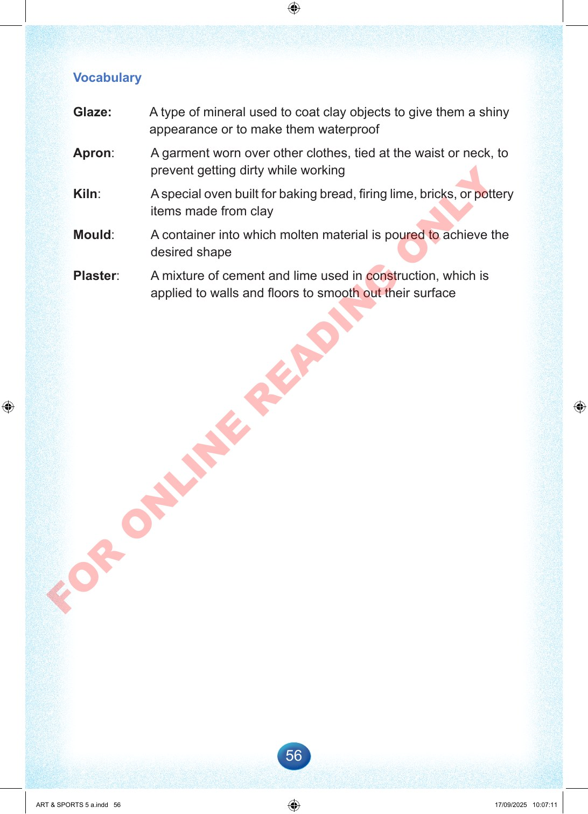

56
Vocabulary
Glaze:
A
type
of
mineral
used
to
coat
clay
objects
to
give
them
a
shiny
appearance
or
to
make
them
waterproof
Apron:
A
garment
worn
over
other
clothes,
tied
at
the
waist
or
neck,
to
prevent
getting
dirty
while
working
Kiln:
A
special
oven
built
for
baking
bread,
firing
lime,
bricks,
or
pottery
items
made
from
clay
Mould:
A
container
into
which
molten
material
is
poured
to
achieve
the
desired
shape
Plaster:
A
mixture
of
cement
and
lime
used
in
construction,
which
is
applied
to
walls
and
floors
to
smooth
out
their
surface
ART
&
SPORTS
5
a.indd
56
ART
&
SPORTS
5
a.indd
56
17/09/2025
10:07:11
17/09/2025
10:07:11
F
O
R
O
N
L
I
N
E
R
E
A
D
I
N
G
O
N
L
Y